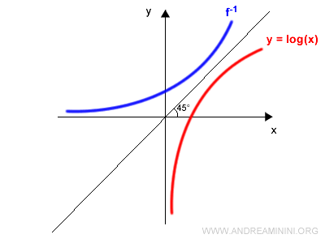
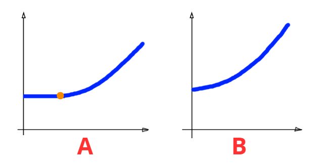
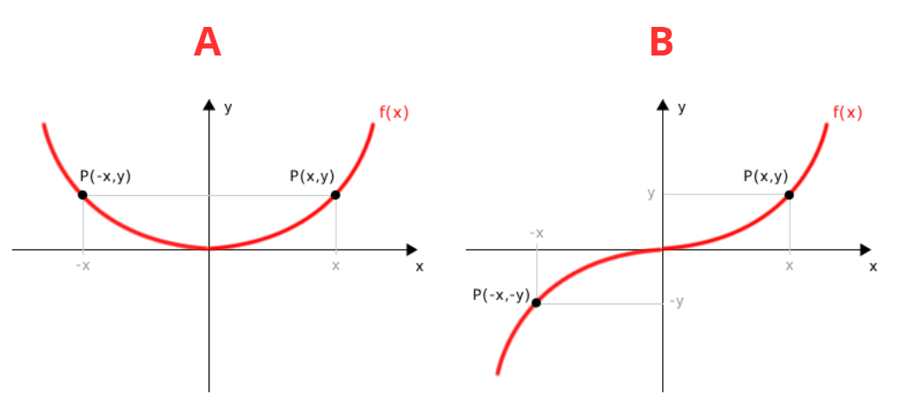
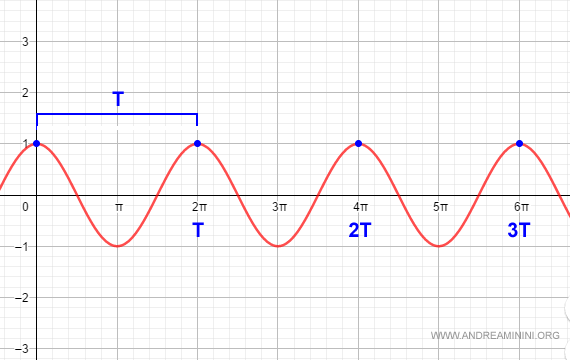

Funzioni Inverse, Monotone e Simmetrie#
1. Funzione Inversa (f⁻¹)#
Requisito Fondamentale: La Biettività#
Regola: Solo le funzioni biettive ammettono una funzione inversa, che si indica con f⁻¹.
Motivazione: La funzione deve essere sia iniettiva che suriettiva per garantire che per ogni elemento b in B, esista uno e un solo elemento a in A che le corrisponda (ovvero, che f(a) = b).
Suriettività Garantisce l’Esistenza:
Spiegazione: Per ogni b in B (il nuovo Dominio), la suriettività garantisce che esiste almeno un elemento a in A tale che f(a) = b. Non ci sono “buchi” nel Codominio originale.Iniettività Garantisce l’Unicità:
Spiegazione: L’iniettività garantisce che l’elemento a trovato sia unico. Senza questa proprietà, l’inversa non saprebbe quale dei due (o più) a restituire.
Conclusione: Solo quando è biettiva, la funzione inversa può essere definita in modo univoco in quanto siamo sicuri che manterrà le caratteristiche viste in “Regola Fondamentale (Proprietà delle Corrispondenze)” precedentemente.
Definizione e Trasformazione#
La funzione inversa scambia il ruolo di dominio e codominio: f⁻¹: B → A.
Definizione Formale:
f⁻¹(b) = a ⇔ f(a) = b
In poche parole: L’inversa prende un valore b (output di f) e restituisce il suo input originale a.
Esempio:
f(x) = x², f: [0, +∞) → [0, +∞).
Questo significa che sappiamo che sia il dominio che il codominio hanno x e y ≥ 0.
Una funzione con questo dominio e questo codominio è per definizione biettiva quindi invertibile.
Quindi dobbiamo trovare un numero x tale che x² = y cioè x = √y.
Osservazioni#
Se f(x) è biettiva allora f⁻¹ sarà biettiva
(x,y) ∈ graph(f) ⇔ (y,x) ∈ graph(f⁻¹) quindi y = f(x) ⇔ f⁻¹(y) = x
Se f(x) è una funzione invertibile i grafici di f e di f⁻¹ sono perfettamente simmetrici rispetto alla retta y = x (vedi foto sotto)

2. Funzioni Monotone#
Una funzione f: A → B, dove A, B ⊂ ℝ, è detta monotona se, per ogni scelta di due elementi x₁, x₂ nel dominio A con x₁ < x₂, la relazione tra i loro valori f(x₁) e f(x₂) rimane sempre dello stesso tipo.
In poche parole se presi due numeri a caso x₁ e x₂ dove x₂ è più grande di x₁, f(x₁) è sempre ≤ o < o ≥ o > di f(x₂).
Termini Generali#
Tipo di Monotonia |
Condizione per x₁ < x₂ |
Descrizione |
Proprietà |
|---|---|---|---|
1. Strettamente Crescente |
f(x₁) < f(x₂) |
All’aumentare di x, f(x) aumenta rigorosamente. |
È iniettiva. |
2. (Debolmente) Crescente |
f(x₁) ≤ f(x₂) |
All’aumentare di x, f(x) può aumentare o rimanere costante. |
|
3. Strettamente Decrescente |
f(x₁) > f(x₂) |
All’aumentare di x, f(x) diminuisce rigorosamente. |
È iniettiva. |
4. (Debolmente) Decrescente |
f(x₁) ≥ f(x₂) |
All’aumentare di x, f(x) può diminuire o rimanere costante. |
Strettamente Monotona: Si dice strettamente monotona se è strettamente crescente (1) o strettamente decrescente (3).
(Debolmente) Monotona: Si dice (debolmente) monotona se è crescente (2) o decrescente (4).

Nell’immagine sopra possiamo notare che A è una funzione (Debolmente) monotona in quanto (Debolmente) crescente visto che fino al punto arancione f(x₁) = f(x₂) mentre che B è una funzione strettamente monotona in quanto strettamente crescente visto che f(x₁) < f(x₂).
Si noti che una retta orizzontale sarà contemporaneamente (Debolmente) crescente e decrescente in quanto, per tutti i valori possibili di x₁ e x₂, f(x₁) sarà uguale f(x₂).
Osservazioni#
Conservazione e Inversione dell’Ordinamento#
Le funzioni monotone hanno un effetto prevedibile sulle disuguaglianze tra i valori nel dominio:
Funzione Crescente (Strettamente o Debolmente):
Se f è crescente, essa mantiene l’ordinamento.
Se x₁ < x₂, allora f(x₁) < f(x₂) (se strettamente crescente).
Se x₁ < x₂, allora f(x₁) ≤ f(x₂) (se debolmente crescente).
Spiegazione Semplice: Se un numero è più piccolo di un altro (x₁ < x₂), l’immagine del primo numero attraverso la funzione crescente f(x₁) rimarrà più piccola (o uguale) dell’immagine del secondo f(x₂). La disuguaglianza non cambia verso.
Funzione Decrescente (Strettamente o Debolmente):
Se f è decrescente, essa inverte l’ordinamento.
Se x₁ < x₂, allora f(x₁) > f(x₂) (se strettamente decrescente).
Se x₁ < x₂, allora f(x₁) ≥ f(x₂) (se debolmente decrescente).
Spiegazione Semplice: Se un numero è più piccolo di un altro (x₁ < x₂), l’immagine del primo numero f(x₁) diventerà più grande (o uguale) dell’immagine del secondo f(x₂). La disuguaglianza cambia verso (ad esempio, da < a >).
Monotonia e Rapporto Incrementale#
Questa osservazione fornisce un modo matematico molto potente per verificare la stretta monotonia usando il Rapporto Incrementale.
Una funzione f è strettamente crescente se e solo se il suo Rapporto Incrementale è sempre positivo:
f(x₁) - f(x₂)
------------- > 0
x₁ - x₂
per ogni x₁, x₂ nel dominio A con x₁ ≠ x₂.
Spiegazione Semplice:
Il numeratore (f(x₁) - f(x₂)) è la differenza tra i valori y (chiamata Δy).
Il denominatore (x₁ - x₂) è la differenza tra i valori x (chiamata Δx).
Il Rapporto Incrementale è il rapporto Δy/Δx, che geometricamente rappresenta la pendenza della retta secante che collega i due punti (x₁, f(x₁)) e (x₂, f(x₂)) sul grafico.
Affinché una funzione sia strettamente crescente, la pendenza tra due punti qualsiasi deve essere sempre positiva (la retta deve “salire” andando da sinistra a destra). Questo è garantito se il numeratore e il denominatore hanno sempre lo stesso segno: se Δx è positivo, anche Δy deve essere positivo, e viceversa.

Monotonia e Rapporto Incrementale (Decrescente)#
La stessa osservazione sul rapporto incrementale si applica alle funzioni strettamente decrescenti.
Regola: Una funzione f è strettamente decrescente se e solo se il suo Rapporto Incrementale è sempre negativo:
f(x₁) - f(x₂)
------------- < 0
x₁ - x₂
per ogni x₁ ≠ x₂ nel dominio.
Spiegazione Semplice (Segni Discordi): Il rapporto deve essere negativo. Questo significa che il numeratore (f(x₁) - f(x₂), la differenza sulle y) e il denominatore (x₁ - x₂, la differenza sulle x) devono essere di segno discorde (uno positivo e l’altro negativo).
Se x₁ - x₂ > 0 (cioè x₁ > x₂), la funzione è decrescente, quindi f(x₁) deve essere minore di f(x₂), rendendo il numeratore negativo. (Negativo / Positivo = Negativo).
Monotonia Debole (Analogamente): Si applica lo stesso principio per la monotonia debole:
f è debolmente crescente se (f(x₁) - f(x₂))/(x₁ - x₂) ≥ 0.
f è debolmente decrescente se (f(x₁) - f(x₂))/(x₁ - x₂) ≤ 0.
Esempio Cruciale: f(x) = 1/x#
Viene analizzata la funzione iperbole f(x) = 1/x.
Dominio A: ℝ \ {0} (tutti i numeri reali tranne x = 0).
Analisi della Monotonia su Intervalli Separati
La funzione è strettamente decrescente su ciascuno dei due intervalli che compongono il dominio:
Intervallo Positivo (0, +∞):
Scegliamo x₁ < x₂ in (0, +∞).
In questo intervallo, si ha f(x₁) > f(x₂).
Conclusione: f è strettamente decrescente in (0, +∞).
Intervallo Negativo (-∞, 0):
Scegliamo x₃ < x₄ in (-∞, 0).
Anche in questo intervallo, si ha f(x₃) > f(x₄).
Conclusione: f è strettamente decrescente in (-∞, 0).
Il Controesempio
Nonostante la funzione sia decrescente in ogni singolo “pezzo” del dominio, la conclusione è:
Ma f non è decrescente su (-∞, 0) ∪ (0, +∞).
Perché? Per verificare la monotonia sull’intero dominio A, dobbiamo confrontare due punti scelti ovunque in A.
Controesempio fornito: Si prendono x₁ = -1 (nel dominio negativo) e x₂ = 1 (nel dominio positivo).
Scegliamo x₁ < x₂: -1 < 1 (Vero).
Calcoliamo i valori della funzione:
f(x₁) = f(-1) = 1/(-1) = -1.
f(x₂) = f(1) = 1/1 = 1.
Confrontiamo f(x₁) e f(x₂): -1 < 1, quindi f(x₁) < f(x₂).
Risultato: Dato che x₁ < x₂ ha portato a f(x₁) < f(x₂), la funzione si è comportata in modo crescente in quel salto, contraddicendo la definizione di funzione decrescente sull’intero dominio A.
Morale dell’Esempio: Una funzione deve essere definita come monotona sull’intero insieme in cui si afferma che lo sia. Se ci sono “salti” o discontinuità (come in x = 0), non si può estendere la proprietà dagli intervalli alla loro unione se la proprietà viene violata nel passaggio tra gli intervalli.

3. Composizione di Funzioni Monotone#
Definizione: Siano f: A → B e g: B → C due funzioni.
La funzione composta è (g ∘ f)(x) = g(f(x)).
La monotonia della funzione composta è determinata dalla combinazione della monotonia di f (interna) e g (esterna).
Regola Fondamentale (Prodotto dei Segni)#
La composizione di funzioni si comporta come il prodotto dei segni:
Crescente ≈ segno + (mantiene l’ordinamento).
Decrescente ≈ segno - (inverte l’ordinamento).
f (Interna) |
g (Esterna) |
g∘f (Composta) |
Prodotto dei Segni |
|---|---|---|---|
Crescente |
Crescente |
Crescente |
(+) × (+) = (+) |
Crescente |
Decrescente |
Decrescente |
(+) × (-) = (-) |
Decrescente |
Crescente |
Decrescente |
(-) × (+) = (-) |
Decrescente |
Decrescente |
Crescente |
(-) × (-) = (+) |
Osservazione: La Proposizione è vera anche per la stretta monotonia.
Esempio: h(x) = e^(x³)#
La funzione h(x) = e^(x³) si ottiene per composizione di:
Funzione interna f(x) = x³
Funzione esterna g(t) = eᵗ
f(x) = x³ è strettamente crescente.
g(t) = eᵗ è strettamente crescente.
Conclusione: Per la regola del prodotto dei segni (+ × +), h = g ∘ f è strettamente crescente.
4. Monotonia e Iniettività#
Proposizioni Fondamentali#
Regola 1: Se f è strettamente monotona (strettamente crescente o strettamente decrescente), allora f è iniettiva.
Spiegazione: La stretta monotonia garantisce che se x₁ ≠ x₂, allora f(x₁) ≠ f(x₂), che è la definizione di iniettività.
Regola 2: Anche la composizione di funzioni iniettive è iniettiva.
Attenzione (Il Viceversa): Se f è iniettiva, f non è necessariamente monotona.
Esempio: La funzione f(x) = 1/x (definita su ℝ \ {0}) è iniettiva, ma abbiamo visto che non è monotona sull’intero dominio (si comporta in modo crescente nel passaggio da un quadrante all’altro).
5. Dominio Naturale (o Insieme di Definizione)#
Definizione#
Il dominio naturale (o insieme di definizione) di una funzione è il più grande sottoinsieme di ℝ dove ha senso scrivere la funzione.
Esempio#
Funzione: f(x) = 1/x
Dominio Naturale: ℝ \ {0} (l’insieme dei numeri reali escluso lo zero).
Esempio Continuato: f(x) = 1/x#
Abbiamo visto che f(x) = 1/x è iniettiva, ma non è decrescente sull’intero dominio A = (-∞, 0) ∪ (0, +∞).
Scelta dei Punti: Scegliamo un punto nel quadrante negativo (x₁) e uno nel quadrante positivo (x₂).
x₁ |
Relazione |
x₂ |
f(x₁) |
Relazione |
f(x₂) |
Conclusione |
|---|---|---|---|---|---|---|
-1 |
< |
1 |
-1 |
< |
1 |
Violazione! |
Risultato: Dato che x₁ < x₂ ha portato a f(x₁) < f(x₂), la funzione si è comportata in modo crescente in questo salto, pur essendo decrescente in ogni intervallo.
Questo dimostra il punto: una funzione deve essere definita come monotona sull’intero insieme in cui si afferma che lo sia.
6. Simmetrie delle Funzioni#
Per definire funzioni pari e dispari, il dominio della funzione deve essere simmetrico rispetto all’origine (ovvero, se x è nel dominio, anche -x deve esserlo).
Funzione PARI (Simmetria rispetto all’asse y)#
Definizione: f si dice PARI se f(x) = f(-x) per ogni x nel dominio.
Grafico: Il grafico è simmetrico rispetto all’asse y.
Esempio: f(x) = x²
f(-x) = (-x)² = x² = f(x), quindi f è pari.
Funzione DISPARI (Simmetria rispetto all’origine)#
Definizione: f si dice DISPARI se f(-x) = -f(x) per ogni x nel dominio.
Grafico: Il grafico è simmetrico rispetto all’origine.
Esempio: f(x) = x³
f(-x) = (-x)³ = -x³ = -f(x), quindi f è dispari.

Nell’immagine sopra potete vedere una funzione pari (A) ed una funzione dispari (B)
7. Funzioni Periodiche#
Definizione: Una funzione f si dice periodica di periodo P ∈ ℝ se f(x + P) = f(x).
Requisito Dominio: Se x è nel dominio, anche x + P deve esserlo.
Esempio: f(x) = sin(x) è periodica di periodo P = 2π.
